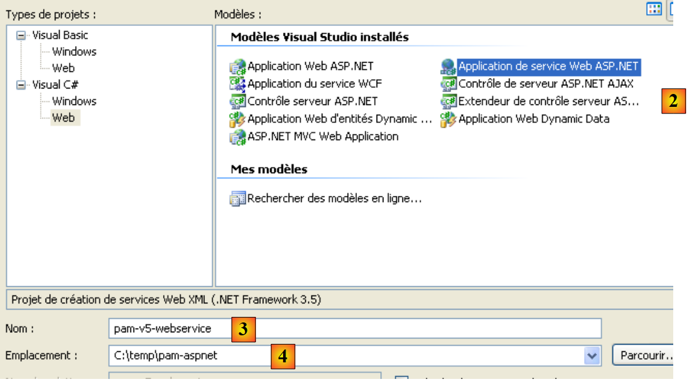
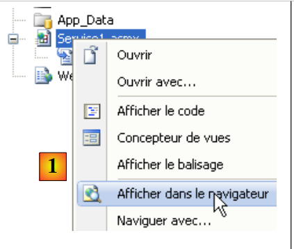
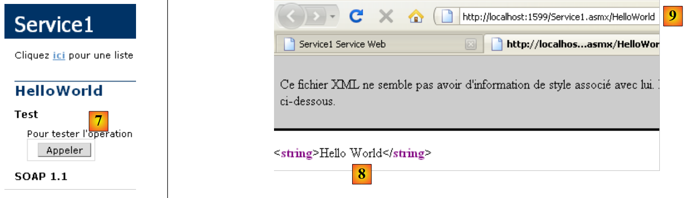
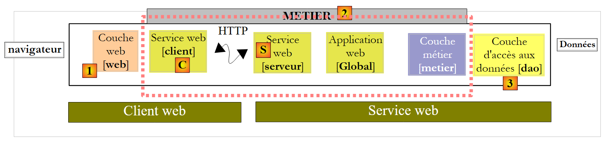
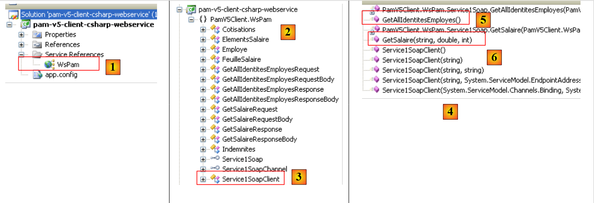
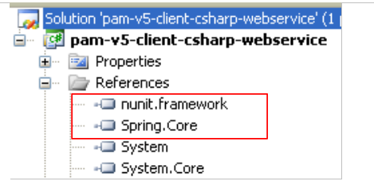

9. The [SimuPaie] application – version 5 – ASP.NET / web service
Recommended reading: reference [2], Introduction to C# 2008, Chapter 10 "Web Services"
9.1. The application's new architecture
The Pam application’s layered architecture is currently as follows:
 |
We will evolve it as follows:
 |
Whereas in the previous architecture, the [web], [business], and [DAO] layers ran in the same .NET virtual machine, in the new architecture, the [web] layer will run in a different virtual machine than the [business] and [DAO] layers. This will be the case, for example, if the [web] layer is on machine M1 and the [business] and [DAO] layers are on machine M2. Here we have a client/server architecture:
- the server consists of the [business] and [DAO] layers. Because it is a web service, it requires web server #2 to run.
- The client consists of the [web] layer. To run, it requires web server #1.
- The client and server communicate over the TCP/IP network using the HTTP/SOAP protocol. To do this, two new layers must be added to the architecture:
- the [S] layer, which will be a web service. The web service receives requests from remote clients and uses the [business] and [DAO] layers to fulfill them. There are many ways to build a TCP/IP service. The advantage of the web service is twofold:
- it uses the HTTP protocol, which is allowed through corporate and government firewalls
- it uses a standard HTTP/SOAP sub-protocol, implemented by many development platforms: .NET, Java, PHP, Flex, etc. Thus, a web service can be "consumed" (the standard term) by .NET, Java, PHP, Flex, etc., clients
- Layer [C], which will act as the client for the remote web service. Its role will be to communicate with the web service [S].
- the [S] layer, which will be a web service. The web service receives requests from remote clients and uses the [business] and [DAO] layers to fulfill them. There are many ways to build a TCP/IP service. The advantage of the web service is twofold:
This new architecture can be derived from the previous ones without much effort:
- the [business] and [DAO] layers remain unchanged
- the [web] layer evolves slightly, primarily to reference entities such as Employee and Payroll, which have become entities of the client layer [C]. These entities are analogous to those in the [business] or [DAO] layers but belong to different namespaces.
- the server layer [S] is a class that implements the IPamMetier interface of the [business] layer. This implementation simply calls the corresponding methods of the [business] layer. The methods implemented by the server layer [S] will be "exposed" to remote clients, who will be able to call them.
- The client layer [C] will be generated by Visual Studio.
The principles of the new architecture are as follows:
- The [web] layer continues to communicate with the [business] layer as if it were local. To achieve this, the client layer [C] implements the IPamMetier interface of the actual [business] layer and presents itself to the [web] layer as a local [business] layer. Apart from the namespace issue mentioned earlier, the [web] layer remains unchanged. This is the advantage of working in layers. If we had built a single-layer application, it would require a major overhaul.
- The client layer [C] transparently forwards the [web] layer’s requests to the remote web service [S]. It handles all aspects of “network communication.” It receives a response from the remote web service, which it formats to return to the [web] layer in the form the latter expects.
- On the server side, the web service [S] receives commands from its remote clients. It formats them to call the methods of the IPamMetier interface in the [business] layer. Once it has received the response from the [business] layer, it formats it to transmit it over the network to the client [C]. The [business] and [DAO] layers do not need to be modified.
9.2. The Visual Web Developer project for the web service
We are building a new project with Visual Web Developer:
 |
- in [1], we select a C# web project
- in [2], we select "ASP.NET Web Service Application"
- in [3], we name the web project
- in [4], we specify a location for this project
 |
- In [1], the generated project. It is a standard web project with the following details:
- We specified that the project is a "Web service." A Web service does not send HTML web pages to its clients but rather data in XML format. Therefore, the [Default.aspx] page that is usually generated was not created.
- In [2], a file [Service1.asmx] was generated with the following content:
<%@ WebService Language="C#" CodeBehind="Service1.asmx.cs" Class="pam_v5_webservice.Service1" %>
- (continued)
- - The WebService tag indicates that [Service.asmx] is a web service
- - The CodeBehind attribute specifies the location of the source code for this web service
- - The Class attribute specifies the name of the class that implements the web service in the source code
The source code [Service.asmx.cs] for the default web service is as follows:
using System.Web.Services;
namespace pam_v5_webservice
{
/// <summary>
/// Service summary description1
/// </summary>
[WebService(Namespace = "http://tempuri.org/")]
[WebServiceBinding(ConformsTo = WsiProfiles.BasicProfile1_1)]
[System.ComponentModel.ToolboxItem(false)]
// To allow this Web service to be called from a script using ASP.NET AJAX, remove the comment marks from the following line.
// [System.Web.Script.Services.ScriptService]
public class Service1 : System.Web.Services.WebService
{
[WebMethod]
public string HelloWorld()
{
return "Hello World";
}
}
}
- line 8: the WebService annotation, which causes the Service1 class on line 13 to be exposed as a web service. A web service belongs to a namespace to prevent two web services in the world from having the same name. We will need to change this namespace later.
- line 13: the Service1 class derives from the WebService class of the .NET framework.
- line 16: the WebMethod annotation ensures that the method annotated in this way will be exposed to remote clients, who will then be able to call it.
- Lines 17–20: The HelloWorld method is a demonstration method. We will remove it later. It allows us to perform initial tests and explore Visual Studio tools as well as certain key concepts regarding web services.
 |
- In [1], we run the web service [Service.asmx]
 |
- VS Web Developer has launched its built-in web server and is listening on a random port, in this case 1599. The URL [2] was then requested from the web server. This is the URL for a web service test page.
- In [3], a link that allows you to view the web service description file. This file, called a WSDL (Web Service Description Language) file because of its suffix (.wsdl), is an XML file describing the methods exposed by the web service. It is from this WSDL file that clients can learn:
- the namespace of the web service
- the list of methods exposed by the web service
- the parameters expected by each of them
- the response returned by each of them
- in [4], the single method exposed by the web service .
 |
- in [5], the contents of the WSDL file obtained via the link [3]. Note the URL [6]. Knowledge of this URL is necessary for web service clients.
 |
- In [7], the page accessed by following the link [4] allows you to call the [HelloWorld] method of the web service
- In [8], the result obtained: an XML response. Note the method’s URL [9].
Examining the previous pages helps us understand how a web service method is called and what type of response it returns. This enables us to write HTTP clients capable of communicating with the web service. Most modern IDEs allow for the automatic generation of this HTTP client, thereby saving the developer from having to write it. This is particularly the case with Visual Studio Express.
Before continuing with this project, we will change the default namespace used when generating classes:
 |
When we select the project properties (right-click on the project / Properties), we see [1] the project assembly name and [2] its default namespace.
Once this is done,
- in [Service1.asmx.cs], we change the class namespace:
using System.Web.Services;
namespace pam_v5
{
...
public class Service1 : System.Web.Services.WebService
{
...
}
}
- In [Service.asmx], we also change the namespace used for the [Service1] class (right-click / View Source):
<%@ WebService Language="C#" CodeBehind="Service1.asmx.cs" Class="pam_v5.Service1" %>
Let’s return to our application’s architecture:
 |
- The [S] layer is the web service. It simply exposes the methods of the [business] layer to remote clients. This is the layer we are currently building.
- The [C] layer is the web service’s HTTP client. This is the layer that IDEs can generate automatically.
- The [web] layer treats the [C] layer as a local [business] layer if we ensure that the [C] layer implements the interface of the remote [business] layer.
We can see below that our web service will:
- expose the methods of the [business] layer
- communicate with the [business] layer, which in turn will communicate with the [DAO] layer.
The project must therefore use the DLLs for the [business] and [DAO] layers. It evolves as follows:
 |
- in [1], we add references to the project
- in [2], we select the usual DLLs from the [lib] folder. We will ensure that their "Copy to Local" property is set to True. The selected DLLs are those that implement the [business] and [DAO] layers with NHibernate support.
An "ASP.NET Web Service" type web application can have a global application class "Global.asax" just like a classic "ASP.NET Web Site" application. We have seen the benefits of such a class:
- it is instantiated when the application starts and remains in memory
- it can thus store data shared by all clients that is read-only. In our application, it will store, as in the previous ones, the simplified list of employees. This will avoid having to retrieve this list from the database when a client requests it.
 |
- In [1], right-click on the project
- in [2], select the [Add New Item] option
- In [3], select [Global Application Class]
- In [4], the [Global.asax] file has been added to the project
The contents of the [Global.asax] file are as follows:
<%@ Application Codebehind="Global.asax.cs" Inherits="pam_v5.Global" Language="C#" %>
The contents of the [Global.asax.cs] file are as follows:
using System;
namespace pam_v5
{
public class Global : System.Web.HttpApplication
{
protected void Application_Start(object sender, EventArgs e)
{
}
...
}
}
What should we do in the Application_Start method? Exactly the same thing as in previous web applications. Let’s go back to the application architecture and place the [Global] class there:
 |
In the diagram above,
- the [Global] class is instantiated when the web service starts. It remains in memory as long as the web service is active.
- The [Global] class instantiates the [business] and [DAO] layers in its [Application_Start] method
- To improve performance, the [Global] class stores the simplified list of employees in an internal field. It will retrieve the list of employees from this field.
- The web service is instantiated with each client request. It disappears after serving that request. It will not communicate directly with the [business] layer but with the [Global] class. The latter will implement the [business] layer’s interface.
The [Global] class is similar to the one already built for previous applications:
using System;
using Pam.Dao.Entites;
using Pam.Metier.Entites;
using Pam.Metier.Service;
using Spring.Context.Support;
namespace pam_v5
{
public class Global : System.Web.HttpApplication
{
// --- static application data ---
public static Employe[] Employes;
public static IPamMetier PamMetier = null;
protected void Application_Start(object sender, EventArgs e)
{
// instantiation layer [metier]
PamMetier = ContextRegistry.GetContext().GetObject("pammetier") as IPamMetier;
// retrieve the simplified employee table
Employes = PamMetier.GetAllIdentitesEmployes();
}
// simplified list of employees
static public Employe[] GetAllIdentitesEmployes()
{
return Employes;
}
// employee salary
static public FeuilleSalaire GetSalaire(string SS, double heuresTravaillées, int joursTravailles)
{
return PamMetier.GetSalaire(SS, heuresTravaillées, joursTravailles);
}
}
}
The [Global] class implements the [IPamMetier] interface, but this is not explicitly stated in the declaration:
public class Global : System.Web.HttpApplication, IPamMetier
In fact, the methods GetAllEmployeeIDs (line 24) and GetSalary (line 30) are static, whereas the methods of the IPamMetier interface are not. Therefore, the Global class cannot implement the IPamMetier interface. Furthermore, it is not possible to declare the GetAllEmployeeIDs and GetSalary methods as non-static. This is because they are accessed via the class name and not via an instance of the class.
- Line 15: The Application_Start method is similar to that of the [Global] classes studied in previous versions. It instantiates the [business] layer (line 18) and then initializes (line 20) the employee array from line 12.
- Line 24: The GetAllEmployeeIDs method simply returns the array of employees from line 12. This is the benefit of having stored it at the start of the application.
- Line 30: The GetSalaire method calls the method of the same name in the [business] layer.
To instantiate the [business] layer (line 18), the [Global] class uses the Spring framework. This is configured by the [Web.config] file, which is identical to that of the previous project: it configures Spring and NHibernate to instantiate the [business] and [DAO] layers of the web service.
Let’s return to the architecture of our client/server application:
 |
On the server side, all that remains is to write the [S] web service itself. If we return to the application architecture:
 |
we see that on the server side, all layers preceding the [business] layer implement its interface, IPamMetier. This is not mandatory, but it is a logical approach. This reasoning can be applied on the client side, to the client [C] of the web service [S]. Thus, all layers separating the [web] layer from the [business] layer implement the IPamMetier interface. We can therefore say that we have returned to a three-tier application:
- the presentation layer [web] [1]
- the [business] layer [2]
- the data access layer [3]
The implementation of the web service [Service1.asmx.cs] could be as follows:
using System.Web.Services;
using Pam.Dao.Entites;
using Pam.Metier.Entites;
using Pam.Metier.Service;
namespace pam_v5
{
[WebService(Namespace = "http://st.istia.univ-angers.fr/")]
[WebServiceBinding(ConformsTo = WsiProfiles.BasicProfile1_1)]
[System.ComponentModel.ToolboxItem(false)]
public class Service1 : System.Web.Services.WebService, IPamMetier
{
// list of all employee identities
[WebMethod]
public Employe[] GetAllIdentitesEmployes()
{
return Global.GetAllIdentitesEmployes();
}
// ------- salary calculation
[WebMethod]
public FeuilleSalaire GetSalaire(string ss, double heuresTravaillees, int joursTravailles)
{
return Global.GetSalaire(ss, heuresTravaillees, joursTravailles);
}
}
}
- line 8: the class is annotated with the [WebService] attribute, and we assign a name to the web service namespace
- line 11: the [Service1] class inherits from the [WebService] class and implements the [IPamMetier] interface
- lines 15 and 22: each method of the class is annotated with the [WebMethod] attribute in order to be exposed to remote clients. By default, all public methods of a web service are exposed. The attributes in lines 15 and 22 are therefore optional here. To implement the [IPamMetier] interface, each method simply calls the method of the same name in the [Global] class.
We are ready to run the web service:
 |
- in [1], the project is regenerated
- in [2], we select the web service [Service1.asmx] and display it in the browser [3]
- in [4], the displayed web page. It shows the web service methods.
 |
- in [4], we follow the link [GetAllIdentitesEmployes] and in [5] we get the test page for this method.
- in [6], the method’s URL
- In [7], the [Call] button used to test the method. This method does not require any parameters.
- In [8], the XML result returned by the web service. In this result, only the SS, LastName, and FirstName properties of the Employee objects are significant because the [GetAllEmployeeIDs] method requests only these properties. However, this method returns an array of Employee objects. We can see in [8] that the numeric properties Id and Version are included in the returned XML stream, but not the properties with a null value: Address, City, ZipCode, Allowances.
We have an active web service. We will now write a C# client for it. To do this, we will need the URI of the web service’s WSDL file. We obtain it from the page initially displayed when executing [Service.asmx]:
 |
- in [1], the web service URI
- in [2], the link to its WSDL file
- in [3], the value of this link
9.3. The C# project for a NUnit client of the web service
We create a C# project (using Visual C#, not Visual Web Developer) for the web service client. This will be a NUnit test client. Therefore, the project will be of the "Class Library" type.
 |
- in [1], we create a C# project of the "Class Library" type
- in [2], we name the project
- In [3], the project. We delete [Class1.cs].
- In [4], the new project.
 |
- In the project properties, on the [Application] tab [5], we set the project namespace. Every class generated by the IDE will be in this namespace.
We save our new project to a location of our choice:
Once this is done, we generate the remote web service client. To understand what we are about to do, we need to revisit the client/server architecture currently under construction:
 |
The IDE will generate the client layer [C] from the URI of the web service’s WSDL file [S]. Recall that the URI of this file was noted earlier. We proceed from the web s follows:
 |
- In [1], right-click the References branch and add a service reference
- In [2], enter the URL of the web service's WSDL file noted earlier. The service must be running if it is not already.
- In [3], request discovery of the web service via its WSDL file
- In [4], the discovered web service
- In [5], the methods exposed by the web service.
- In [6], the namespace in which you want to place the classes and interfaces of the client that will be generated.
- Confirm the wizard
 |
- In [1], the generated client file ( ). Double-click it to view its contents.
- in [2], in the Object Explorer, the classes and interfaces of the Client.WsPam namespace are displayed. This is the namespace of the generated client.
- In [3], the class that implements the web service client.
- In [4], the methods implemented by the client [Service1SoapClient]. Here you will find the two methods of the remote web service [5] and [6].
- In [2], you can see the entity diagrams for the layers:
- [business]: Payroll, PayrollItems
- [DAO]: Employee, Contributions, Allowances
Moving forward, keep in mind that these representations of the remote entities are located on the client side and in the PamV5Client.WsPam namespace.
Let’s examine the methods and properties exposed by one of them:
 |
- In [1], we select the local [Employee] class
- In [2], we see the properties of the remote [Employee] entity as well as private fields used for the local entity’s specific needs.
Let’s return to our C# application. We add a NUnit test class to it:
 |
- in [1], the added [NUnit] class. The [NUnit] class will require the NUnit framework and therefore a reference to its DLL. We assume here that the NUnit framework has been installed on the machine (http://nunit.org/).
- In [2], we add a reference to the project
- in the [3] .NET tab, which lists the DLLs registered on the machine, we select [4], the [nunit.framework] DLL, version 2.4.6 or later.
Additionally, we will use Spring to instantiate the local client [C] of the web service [S]:
 |
The reference to the Spring DLL can be added in the same way as for the NUnit framework if the DLLs have already been registered on the machine (http://www.springframework.net/download.html).
We proceed differently. We use the [lib] folder from previous projects, which contained the DLLs required by Spring, and add the Spring reference to the project:
 |
Let’s revisit the architecture of the client currently under development:
 |
Above, we see that the test client [1] interfaces with an extended [business] layer [2]. This layer has the same methods as the remote [business] layer. We can therefore use the test class already encountered when testing the [business] layer in the C# project [pam-metier-dao-nhibernate]:
using NUnit.Framework;
using Pam.Dao.Entites;
using Pam.Metier.Entites;
using Pam.Metier.Service;
using Spring.Context.Support;
namespace Pam.Metier.Tests {
[TestFixture()]
public class NunitTestPamMetier : AssertionHelper {
// the [metier] layer to test
private IPamMetier pamMetier;
// manufacturer
public NunitTestPamMetier() {
// layer instantiation [dao]
pamMetier = ContextRegistry.GetContext().GetObject("pammetier") as IPamMetier;
}
[Test]
public void GetAllIdentitesEmployes() {
// audit no. of employees
Expect(2, EqualTo(pamMetier.GetAllIdentitesEmployes().Length));
}
[Test]
public void GetSalaire1() {
// wage sheet calculation
FeuilleSalaire feuilleSalaire = pamMetier.GetSalaire("254104940426058", 150, 20);
// checks
Expect(368.77, EqualTo(feuilleSalaire.ElementsSalaire.SalaireNet).Within(1E-06));
// non-existent employee payslip
bool erreur = false;
try {
feuilleSalaire = pamMetier.GetSalaire("xx", 150, 20);
} catch (PamException) {
erreur = true;
}
Expect(erreur, True);
}
}
}
There are a few changes to make:
- On line 18, we instantiate the [business] layer using the Spring framework. The class is not the same in both cases. Here, the local [business] layer is an instance of the [PamV5Client.WsPam.Service1SoapClient] class, the class generated by the IDE. Therefore, Spring is configured as follows in the [app.config] file of the C# project:
<?xml version="1.0" encoding="utf-8" ?>
<configuration>
<configSections>
<sectionGroup name="spring">
<section name="context" type="Spring.Context.Support.ContextHandler, Spring.Core" />
<section name="objects" type="Spring.Context.Support.DefaultSectionHandler, Spring.Core" />
</sectionGroup>
</configSections>
<spring>
<context>
<resource uri="config://spring/objects" />
</context>
<objects xmlns="http://www.springframework.net">
<object id="pammetier" type="PamV5Client.WsPam.Service1SoapClient, pam-v5-client-csharp-webservice"/>
</objects>
</spring>
<system.serviceModel>
...
- line 16 above, the [pammetier] object is an instance of the [PamV5Client.WsPam.Service1SoapClient] class located in the [pam-v5-client-csharp-webservice] assembly. To find the first piece of information, simply go back to the definition of the [Service1SoapClient] class in the Object Explorer (Section 9.3):
 |
- in [2], the implementation class of the local [business] layer, and in [1] its namespace
- in [3], in the project properties, the assembly name, the second piece of information needed to configure the Spring object [pammetier].
Let’s return to the code for instantiating the local [business] layer in [NUnit.cs]:
// the [metier] layer to test
private IPamMetier pamMetier;
// manufacturer
public NunitTestPamMetier() {
// layer instantiation [dao]
pamMetier = ContextRegistry.GetContext().GetObject("pammetier") as IPamMetier;
}
Line 7: The remote [business] layer was of type IPamMetier. Here, the [business] layer is of type [Service1SoapClient]:
public class Service1SoapClient : System.ServiceModel.ClientBase<Service1Soap>
We see that the Service1SoapClient class does not implement the IPamMetier interface even though it exposes methods with the same names. We must therefore write the instantiation of the local [business] layer as follows:
// the [metier] layer to test
private Service1SoapClient pamMetier;
// manufacturer
public NunitTestPamMetier() {
// instantiation layer [metier]
pamMetier = ContextRegistry.GetContext().GetObject("pammetier") as Service1SoapClient;
}
Another change to make:
[Test]
public void GetSalaire1() {
...
try {
feuilleSalaire = pamMetier.GetSalaire("xx", 150, 20);
} catch (PamException) {
erreur = true;
}
Expect(erreur, True);
}
The code above uses, on line 6, the PamException type, which does not exist on the client side. We will replace it with its parent class, the Exception type.
[Test]
public void GetSalaire1() {
...
try {
feuilleSalaire = pamMetier.GetSalaire("xx", 150, 20);
} catch (Exception) {
erreur = true;
}
Expect(erreur, True);
}
Finally, the imported namespaces are no longer the same:
using System;
using PamV5Client.WsPam;
using NUnit.Framework;
using Spring.Context.Support;
Once this is done, the "Class Library" project can be built. The following DLL is created:
 |
- in [1], the [bin/Release] folder of the C# project
- in [2], the project's DLL.
The NUnit test is then run by the NUnit framework (the MySQL database dbpam_nhibernate must be active for the test):
- in [3] and [4], the DLL [2] is loaded into the NUnit test application
 |
- in [5], the test class is selected and executed [6]
- in [7], the results of a successful test
We now have a working web service.